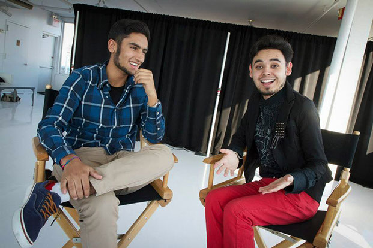
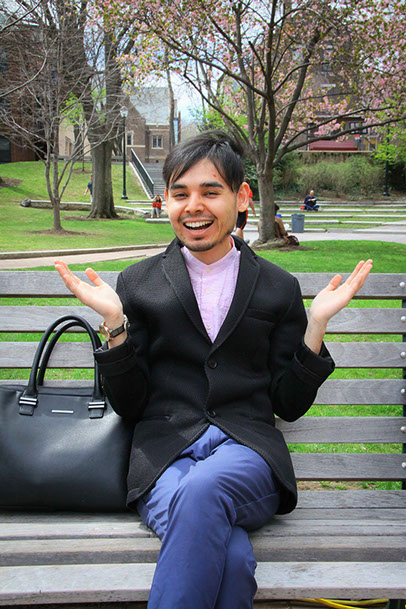
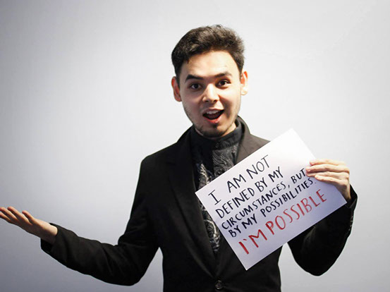

<
>

College senior Sayid Abdullaev perches in his chair in the Penn Bookstore and smiles to himself. His red button-up dotted with tiny white anchors has the collar elegantly tucked in, and his black tweed blazer is frayed at the edges. Altogether, he gives off an aura of casual sophistication, as though his perfectly coordinated look was randomly thrown together from his closet.
He greets me with a warm, personable grin. He gestures excitedly, ready to begin his story. But there’s something about the way he looks around, the way he looks at me — even though he has a story to share, it’s almost as though he is more interested in hearing mine.
“So, where do I begin?” he says, mostly to himself. “I feel like it’s hard, because there are so many beginnings to my life. It’s like a big puzzle, and I don’t see the whole picture yet, but every piece is beautiful. I just have to piece them together.”
And that’s perhaps the best description of Sayid’s life. “I’ve had a series of defining moments, if that makes sense,” he explains.
THE FIRST PUZZLE PIECE
Born in Kyrgyzstan, Sayid and his family are Uyghurs, an ethnic minority that has historically been persecuted throughout the country. His mother worked at a food truck, and his father was a shepherd and a driver.
He speaks especially fondly of his mother. “She worked 24-7. She never had time for anyone else,” he says with a mixture of adoration and sadness. “Hard work, commitment and kindness — I feel like she really braided those qualities in to me.”
Sayid was active in school growing up, receiving what he remembers as “every award imaginable.” He was crowned valedictorian of his high school, despite sometimes struggling to pay for school. When his older brother, Anvar, graduated, he began working to help Sayid pay for his books.
“We’re very different, me and my brother. He’s very into sports; I loved school and community service,” Sayid says. “But he always supported me, no matter what.”
In the midst of school, Sayid started his own non-profit called Youth for Peace, an organization devoted to promoting leadership opportunities among young people. He also worked for a project called Kids for Kids, where he helped children with disabilities gain opportunities for social entrepreneurship, learning and leadership.
After learning to speak English from a group of Peace Corps volunteers, Sayid received an offer from the U.S. State Department to come study in America. Sayid arrived in the United States and was placed with a host family in Arizona to attend school. There, he was named a Global Teen Leader by the organization Three Dot Dash and received an award for excellence in global activism before moving on to attend the College of Southern Idaho.
“It was hard being there. I was working three or four jobs and still living on like $400 per month,” Sayid said. “I originally received a full scholarship from the U.S. embassy, but when I got there, they cut my scholarship by 80 percent. I ran for the student senate to help me pay for it.”
But Sayid’s journey in the United States was about to be cut short. After being in Idaho for a short time, he had to return to Kyrgyzstan to take care of his mother, who had fallen severely ill.
PHOTO COURTESY OF SAYID ABDULLAEV
PEACE FROM THE BROKEN PIECES
“That was probably the hardest time in my life,” Sayid says, for the first time his perfect composure cracking a little. “Knowing that she was going to die and that there was nothing I could do about it ... that was the hardest day of my life I think.”
A year after Sayid’s return home, his mother died. “Her last words to me were, ‘Sayid, you are my gift to the world, and I am so proud of you,’ and that has really driven me,” he said. “She was giving me permission to be myself.”
But his mother’s illness wasn’t the only trauma Sayid endured while back in Kyrgyzstan. “I had done some modeling and had grown my hair out when I was in the U.S. In Kyrgyzstan, it isn’t okay for men to have long hair,” he explains. “I started getting death threats. That’s when I knew that I couldn’t stay there — I had to leave.”
His time in Kyrgyzstan came with a silver lining, though. The day of his mother’s funeral, he came home to an acceptance letter from Penn — an offer he didn’t hesitate to accept.
“There was nothing left for me there. I couldn’t breathe," he said.
Sayid returned to the United States emaciated and broken. “Dave and Monica picked me up at the airport,” he said, referring to his current host parents, Dave and Monica Willard. “I still didn’t have a visa, so I essentially became an undocumented.”
“When he got off that plane, he was just devastating. He weighed like 80 pounds,” Monica Willard said. “I honestly don’t even know how he lifted his suitcase.”
Sayid went back to his original host family in Arizona for a few months before coming back to stay with the Willards. “That summer, he got here as a caterpillar, but he emerged as a fragile but beautiful butterfly,” Monica Willard said.
Sayid and Willard first connected through an organization Sayid works with called Miracle Corners of the World, a nonprofit that works to “empower youth to become positive agents of change in their communities,” according to their website.
“That’s when I realized that my story wasn’t about surviving. It is about thriving,” Sayid said. Now, he is a mixture of calm and confidence. “I have a very spiritual connection with myself. I know that even if I fall, I will build my own wings.”
“Her last words to me were, ‘Sayid, you are my gift to the world, and I am so proud of you,’ and that has really driven me. She was giving me permission to be myself.”
-Sayid Abdullaev
'COMING TO OWN WHO HE WAS'
But he didn’t always have those wings. Sayid’s return to the United States was accompanied by another major change in his life. “Growing up, I had always felt different,” he said. “I started discovering who I was in terms of sexuality, which was hard because I was growing up in an environment where being gay is a sin, and teachers tell you it’s a disability.”
“I knew I was different, but I didn’t have the vocabulary to explain it. I just knew there was no one else like me,” Sayid said. “I used to pray for the pain to go away, but I didn’t want to give up. I didn’t want the pain to define me.”
Sayid came out to Willard and other friends and family members in the United States when he returned after his mother’s death.
“It was honestly pretty evident to me,” Willard said. I never saw it as anything more than him coming to own who he was.”
Sayid feels some sorrow that he did not have the chance to come out to his mother before she died. “Probably my biggest regret is that I never got my mother’s blessing, but I feel like she knew,” he says with a hint of fondness in his voice. “She always told me that I was special and that she would love me no matter what.”
Today, Sayid has still not come out to his brother or his father in Kyrgyzstan, but he suspects they have probably figured it out. “I mean, it’s kind of obvious. We’ve just never had a conversation about it,” he chuckles.
Coming out was not Sayid’s only concern when he came back to the United States — he only had $30 to his name.
“So many people actually came to this country with nothing — at least I had $30, right?” he says so confidently.
While he might have been able to afford a Penn hat or T-shirt, there was no way his $30 would cover the cost of a Penn education.
“I had received this letter of acceptance from Penn, but I wasn’t able to apply for financial aid because I was undocumented,” Sayid explained.
Through a series of private scholarships and donations from friends and family on a GoFundMe page, Sayid essentially crowdsourced his entire education.
“I felt ashamed here at Penn for doing that,” Sayid admits. “Everyone here is so fucking rich. I was like, ‘What am I even doing here? Do I even belong?’”
“Then I realized I’m also fucking rich — I’m rich in knowledge and experience, and I’m going to own it,” he says with a mixture of ferocity and laughter.
With his tuition paid, Sayid got to stay at Penn, where he is now a successful student studying political science. “I’m an OK student I guess. I’m working on my thesis right now,” he shrugs, almost bored by what many students consider their biggest achievement in college.
“I used to pray for the pain to go away, but I didn’t want to give up. I didn’t want the pain to define me.”
-Sayid Abdullaev
FINDING ASYLUM
While most other students were juggling classes and extracurriculars, Sayid was doing something else unique. “It was at Penn that I began the process of applying for political asylum,” he said, noting that he was the only Penn student to be going through the process at the time.
Sayid sought asylum because he risked persecution in Kyrgyzstan due to his ethnic and sexual identity. Last week, his case was finally approved by the State Department, he explains, clapping his hands together excitedly, the happiness evident in his eyes.
“When I got that letter, I just lost it,” he said. “I had always known I belonged, and now I had the documentation to prove it.”
After going through the process of applying for asylum, Sayid decided to do something to transform the process. Along with College senior Katie Sgarro, he is currently working on a database called Asylum Connect to help LGBT political asylum seekers find material resources when they arrive in the United States.
“We found great mentorship in Dr. Hocine Fetni who has expertise in international law and we also spoke with professor Fernando Chang-Muy from the Law School,” Sgarro said. The duo unsuccessfully submitted their project to the President’s Engagement Prizes this year, but they are still moving forward with the proposal.
“We feel that this issue is too important to ignore,” Sgarro added.
Outside of his partnership with Sgarro, Sayid is also working with College senior Ariel Koren to develop his own line of Beats headphones and shades that he calls Bloque the Hate, the proceeds of which will go to supporting homeless LGBT youth, and he is also currently working with teams of television producers in Los Angeles to create his own TV show.
On top of all this, Sayid serves as a Youth Ambassador to the United Nations and regularly gives speeches at their headquarters in New York City and around the world. He is also currently the United Religions Initiative Youth Representative to the United Nations and was named a Point Scholar last year.
When Sayid isn’t busy attending conferences or giving keynote speeches, he enjoys being a typical college student. He gushes about Shonda Rhimes, the creator of ABC shows “Grey’s Anatomy,” “Scandal” and “How to Get Away with Murder,” and he spouts Oprah quotes without even blinking. He is a member of Penn’s national service fraternity, Alpha Phi Omega, and maintains a large circle of friends.
“I’ve always known that my life mission is to help people unfold their stories — and what an amazing gift that is. This will help me get there,” he says confidently. “One of my favorite quotes is, ‘I come as one, but I stand as thousands’ by Maya Angelou.”
For his friends at Penn, this is Sayid’s true talent — getting to know people, unfolding their stories and becoming their friends.
“Sayid is one of the most supportive people I’ve ever met,” said College senior and fellow APO brother Mike D’Antonio. “He’s always there. If you’re having a hard time or a bad day, whenever you need him, he makes time for you.”
Sgarro agreed. “We joke that he ‘doesn’t even go here,’ because he travels so much,” she said, quoting the iconic line from the movie “Mean Girls.” “But even when he’s gone, we’re constantly talking.”
“He has been put on this path, populated by monsters and angels and huge challenges, and he’s been protected, in my view, by his own moral compass.”
-Roberta Richin
I-M-POSSIBLE
As a friend, Sayid is selfless and inspiring. “He reminded me of the truly beautiful things in the world,” said Roberta Richin, a board member for Miracle Corners of the World and Sayid’s mentor. “He has been put on this path, populated by monsters and angels and huge challenges, and he’s been protected, in my view, by his own moral compass.”
“The unique thing about my story,” he says, pondering for a moment, “is that I have been able to survive everything and do all of these different things.”
Sayid has big goals for the future. He tells me about his plans for a book about all of these stories he’s discovered, and about his dreams to be the Secretary General of the United Nations one day. I find myself believing it — all of it.
“It’s not impossible, it’s 'I am possible,'” he says, explaining one of his personal mottos.
“He’s an incredibly forward looking individual,” said Linda Barsik, a friend who Sayid considers his sister. It was Barsik who took Sayid to visit Penn for the first time.
“I think the important thing to remember about Sayid is that none of this has been easy,” Willard said.
Sayid’s life coach Rebecca Arnold agreed. “He has sensitivities deep inside him, but he’s doing something about it,” she said. “He’s managed to flip that equation and turn those sensitivities into something really powerful.”
And powerful is perhaps the best word to describe Sayid today. “He is a force,” Arnold said. “It is so of his being to make positive change in this world — it’s just so viscerally of him.”
“He is destined for greatness and nothing will stand in the way of that,” Barsik agreed.
Willard, with the heart of a truly proud mother, also agreed. “I’m just so incredibly lucky and fortunate to be in his life and on this journey with him.”
Sayid, who will graduate in May, is beginning his plans for his life after Penn. “I have really big dreams,” he said, recalling his favorite quote from the poem, “Invictus.”
“I am the master of my fate: I am the captain of my soul.”
PHOTO COURTESY OF SAYID ABDULLAEV